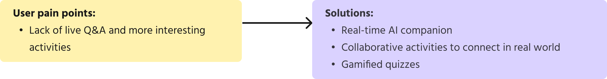

MuseoGo
MuseoGo is an AI-driven museum education application providing engaging and personalized museum learning experience, including itinerary planning, AI companion, gamified quizzes and exit ticket, etc.

My role
Product Designer
User Researcher
My contribution
User research
Wireframe
Prototype
User test
Timeline
Jan 2025 - Mar 2025
Team members
1 Project Manager
1 Product Designer
1 AI Engineer
1 Market Consultant
Overview
Problem statement
Statistics reveal that museums in the U.S. invest $2 billion annually in educational activities. Yet, the average museum engagement rate for 2023/24 stands at just 46%. Lots of museum educational resources are wasted every year because families do not fully engage with the exhibitions and learn effectively in museums.
2 Billion investment annually
Museum engagement rate in 2023/24
Families need a more effective way to learn
Solutions
Before visit
- AI-generated itinerary after users input their needs
- Podcasts generated to preview the itinerary and museum information
During visit
- Real-time AI companion
- Collaborative activities to connect in real world
- Gamified quizzes
After visit
- Unique exit ticket for each visit
- Learning summary of the day
- AI-generated song for review
- Long-term learning resources
Impact
The product is selected to present in ASU+GSE Summit on April 5th in San Diego and I will be honored to present with Ruby as AI innovators.
Research
To begin, we conducted interviews with museum visitors to identify their pain points when it comes to learning in these spaces. Our primary focus was on three key groups: children (ages 8–12), teenagers (ages 13–17), and parents. Based on their feedback, I developed personas to better understand their unique needs, behaviors, and challenges.
Personas
Pain points
Competitor analysis
I also explored existing products in the museum education space, carefully analyzing their features, strengths, and shortcomings. This research helped us pinpoint gaps and uncover our opportunities.

Opportunities
- AI-Powered Personalization
- Real-Time Interaction
- Gamified Learning
- Post-Visit Learning Continuation
Design
Design system
Color Palette
- The contrast ratios for the brand color, text color, and primary stroke against the background color all exceed 3:1 (WCAG), ensuring strong accessibility.
- The brand color is a bright, vibrant orange that feels unique and friendly. This shade effectively captures attention and helps the brand stand out while also aligning with Museo's character color.
- All colors in the palette share the same hue, creating a cohesive and harmonious visual experience across the application.
- Additionally, the primary text color is a dark gray rather than pure black, which helps reduce eye strain and minimizes visual fatigue.
Light mode
Dark mode
Typography
- Headings use Nunito, a rounded sans-serif typeface that conveys a sense of fun, softness, and playfulness—perfectly aligning with our educational app’s friendly and engaging style.
- For body text, we chose Helvetica—a highly legible and clean typeface that ensures readability, even at smaller sizes.
Components
- I developed a component library, including buttons, inputs, media players, cards, and more, to ensure a cohesive look and feel across all app pages.
- Each component is aligned with the accessibility requirements for specs and interaction area of Material Design system.

Prototype
Flow 1: Before visit
After logging in, the users need to input basic information for AI to generate the itinerary
For each family, there may be more than 1 kid, so we support multiple kids option
We generate the personalized itinerary based on kid’s interests and the exhibitions of the museums
We support multilingual features to increase accessibility
Before submitting, there is a review session for users to double check their inputs
The system generates unique itineraries for each group
If users are not satisfied with the current version, they can choose to regenerate
We also generate a podcast to preview the itinerary and family can listen on the way to museum
Flow 2: During visit
The itinerary is displayed as a to-do list
In each exhibition, there is a chatbot, scan feature, collaborative activity and quizzes
The chatbot supports text input
The chatbot supports voice input since users are not convenient to type
The chatbot will guide the learners step by step to finish the activity in a collaborative way
At the end of each exhibition, there is a quiz to review the knowledge learned
When learners choose the wrong answer, a pop-up window with a hint will show up
After they finish the quiz, they will get rewarded with bonus points
Flow 3: After visit
After finishing all the exhibitions, users will get a badge of the museum for collection
The exit ticket reviews the users’ visit in a timeline and highlights some questions the user asked the chatbot
The system also generates a unique song for learners to review the knowledge
The AI-generated song can reinforce the memory of learning result
After the visit, the app will recommend additional learning resources—such as videos, books, related exhibits, and quizzes—to support long-term learning. This feature encourages active engagement beyond the visit and maximizes the educational value of the museum’s offerings.
Experience the user flows by yourself!
Usability Test
Refinement 1: Visibility of system status
Our app involves several AI agents to help generate the content, like the itinerary and podcast, and there is always waiting time during the generation process. In the usability test, users always feels confused when they are waiting for the AI-generated outcome, so I add the loading pages to indicate the system status.
Loading page indicates the successful submission and the real-time progress of the AI generation

This status bar indicates where the users are and breaks a long form into several steps to reduce cognitive loads
This status bar shows the completion rate of the itinerary, providing a clear view of visiting progress
Refinement 2: Aesthetic and minimalist design
The first version of the exit ticket resembled physical real-world tickets, with distinct front and back sides. However, users reported that the page contained too much content, making the small text difficult to read. To address this, I redesigned the exit ticket into a timeline format, optimizing it for mobile viewports.
Before: the exit ticket resembled physical real-world ticket and the small text is hard to read
After: the exit ticket is formatted in a timeline and only highlights some essential interactions to review
Refinement 3: Lower entry barrier and error prevention
In the "Before Visit" section, users are required to enter kid information and visit details before accessing the main features. During usability testing, some participants expressed frustration at the amount of information requested. To improve the experience, I made several input fields optional, keeping only the most essential questions as required. Additionally, I introduced a review page before submission to help users catch and correct input errors.
Visit information is optional to lower the entry barrier for new users
Before submitting to AI, the review page can prevent input mistakes by users
Conclusion
MuseoGo is a testament to the power of user-centered design in creating meaningful and engaging experiences. By addressing the pain points of museum visitors—parents, kids, and teens—we’ve crafted a solution that seamlessly integrates into their journey, from planning at home to exploring in the museum and reflecting afterward. This project highlights how thoughtful UX design, combined with innovative technology, can transform a traditionally passive experience into an interactive, educational, and enjoyable adventure.
Key takeaways
- Journey Mapping: Breaking down the user journey into three phases—before, during, and after the visit—allowed us to create a holistic experience that addressed pain points at every stage.
- Gamification for Engagement: Incorporating gamified elements like badges, quizzes, and rewards made the experience fun and motivating, while also reinforcing learning outcomes.
- AI as a UX Enhancer: The AI companion and personalized features (like custom itineraries and songs) added a layer of interactivity and personalization, making the experience feel tailored and engaging.
- Visual and Interactive Design: The use of a cute AI character, vibrant visuals, and voice input created an inviting and intuitive interface that appealed to both kids and parents.